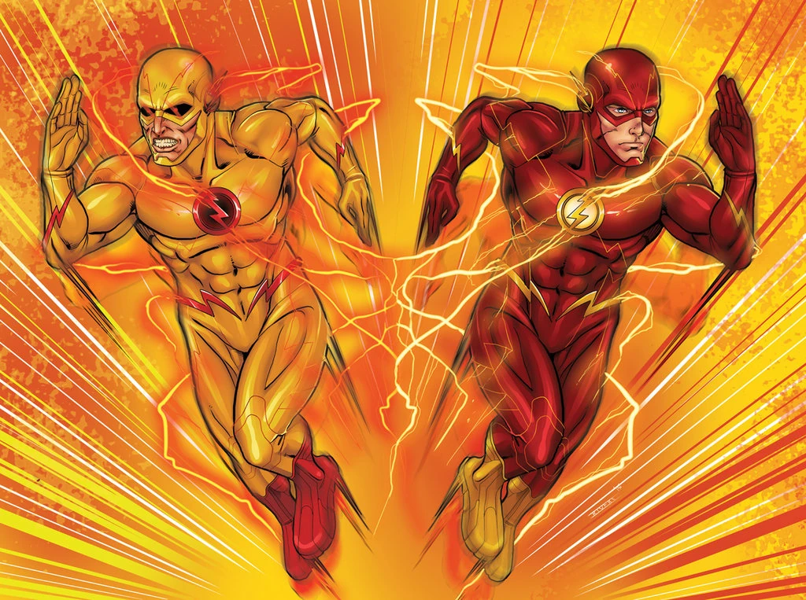
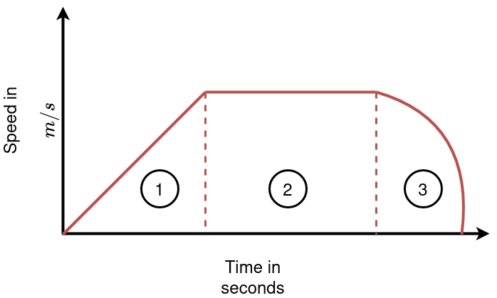

Physics - Year 10
Chapter 2: Forces and Motion
Naypyitaw International Science Academy
2.1 MOTION: Speed, velocity and acceleration

Cambridge English Dictionary: Speed
2.1 MOTION: Speed, velocity and acceleration
Which one is faster?
2.1 MOTION: Speed, velocity and acceleration

Galileo Galilei, 1564 – 1642
"... is usually credited with being the first to measure speed by considering the distance covered and the time it takes."
2.1 MOTION: Speed, velocity and acceleration
$\text{average speed} = \displaystyle \frac{\text{distance moved}}{\text{time taken}}$or
$v = \displaystyle \frac{s}{t}$
Speed is a scalar quantity that is a measure of the rate of change of distance.
Unit: If distance is measured in metres and time in seconds, speed is measured in metres per second ($m/s$)
2.1 MOTION: Speed, velocity and acceleration
$\text{avg. acceleration} = \displaystyle \frac{\text{change in velocity}}{\text{time taken}}$Acceleration is a vector that is a measure of the rate of change of velocityor
$v = \displaystyle \frac{\Delta v}{\Delta t}$
Unit: If time is measured in seconds and velocity in metres per second, acceleration has the unit metres per second squared ($m/s^2$)
2.2 MOTION: Motion Graphs
Distance-Time graphs

On a distance-time graph, speed = gradient
2.2 MOTION: Motion Graphs
Velocity-Time graphs

On a velocity-time graph, acceleration = gradient
On a velocity-time graph, distance travelled = area under the graph
2.2 MOTION: Motion Graphs

2.2 MOTION: Motion Graphs
Mentally visualize how the object described in the above graph moves